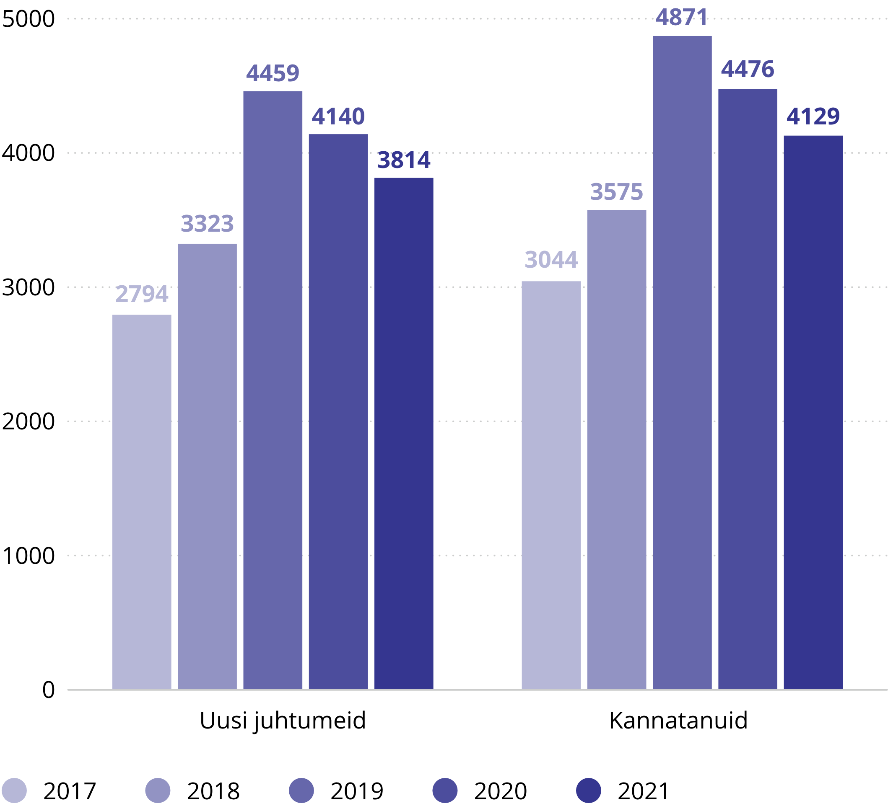

Kuriteoohvrid
Laadi alla .xlsxViimasel kahel aastal on ohvriuuringu andmetel ohvriks langenuid 5% küsitletutest.
2021. aastal jõudis ohvriabini uusi juhtumeid 3814 (-326), uusi kannatanuid jõudis ohvriabini 4129 (-347), neist iga seitsmes oli laps.
Võrreldes 2020. aastaga oli uusi kannatanuid 8% vähem. Ohvriabini jõudvatest kannatanutest kolm neljandikku on naised ning üks
neljandik mehed. Kriisiabitelefoni kõnedest 22% olid seotud perevägivallaga, ohvriabini jõudnud uutest kannatanutest aga 70%.
Ohvriuuringu andmetel langes
2021. aastal kuriteo ohvriks
5% küsitletutest
Vägivaldse ründe
ohvriks langes
1% küsitletutest
Vägivallaga ähvardamise
ohvriks langes
4% küsitletutest
Vt ohvriuuringute kohta ka teemalehti „Kuritegevuse ülevaade“, „Vägivallakuriteod“ ja „Varavastased kuriteod“.

Uued juhtumid ning kannatanud ohvriabis
Ohvriabitöötajad pakuvad tuge ja nõustamist kuriteo, vägivalla või halva kohtlemise ohvriteks langenutele.